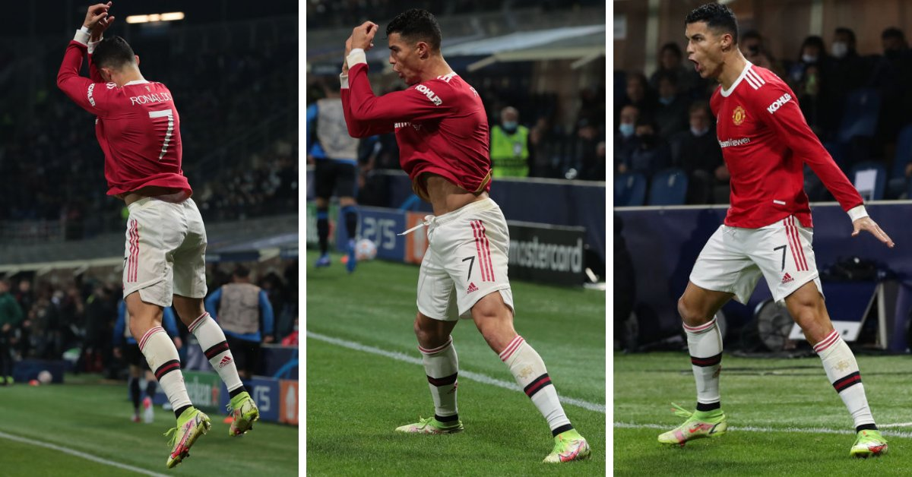

Cristiano Ronaldo
Cristiano Ronaldo dos Santos Aveiro, é um futebolista português que atua como extremo-esquerdo ou ponta de lança. Atualmente joga pelo Manchester United e pela Seleção Portuguesa. É o jogador com mais gols na história do futebol em jogos oficiais. Frequentemente considerado como um dos melhores e mais completos jogadores de todos os tempos foi eleito o melhor jogador do mundo pela FIFA e pela France Football recebendo o prêmio Ballon d'Or (que por um período passou a denominar-se Bola de Ouro da FIFA) um total de cinco vezes: 2008, 2013, 2014, 2016 e 2017. Também venceu o prêmio Bota de Ouro da UEFA em um total de quatro vezes. Ganhou três vezes o prêmio de Melhor Jogador da UEFA na Europa e uma vez o prêmio de Melhor Jogador de Clubes da UEFA.